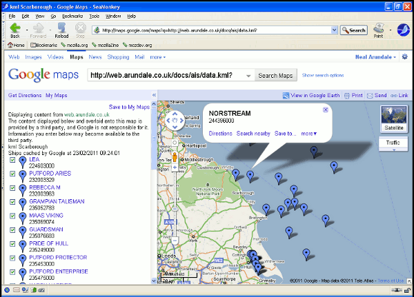

---
---
{% include_relative aishead.htmlf %}
ShipPlotter.xls AIS Reception Website Upload Guide
{% include_relative navbar.htmlf %}
AIS Data Analysis
AIS Reception Website Upload Guide for ShipPlotter.xls
Please note my new AisDecoder
will also upload AIS data (much easier) to Websites
Introduction
The ShipPlotter Data Analysis Spreadsheet will create a number
of files that can be uploaded to a website. The XML and KML
files will integrate with Google Maps to display a map with the
positions of the ships you are receiving overlayed on the map.
For more information on Google maps go to
http://code.google.com/apis/maps/
Quickstart
ShipPlotter > Options

The Options box will be displayed
|
Tick KML Process
and KML Upload
Set URL Path, Username, and Password
|
Open a browser & goto
http://maps.google.com/maps?q=mywebsite/myaisdirectory/data.kml
Substitute your actual
website/directory
and
you should see something like below

What are the Files ?
A reception
Graph,
a
CSV of
ships & received data, a customised
HTML list of ships &
associated data, a customised
XML list of ships & associated data,
&/or a
KML
list.
To view the live files currently being generated from the AIS
data I am receiving in Scarborough, click on the links above.
Depending on your browser & settings, you may have to set
your browser to View > Source to see the actual file without
the browser interpreting the file..
The XML or KML files have to be integrated with Google Maps to
create a meaningful ("rendered") display on your website.
The original way Google rendered your ships on their map
necessitated you placing a XML file on your (or ISP's) server,
registering with Google, and creating a custom webpage. It is
the custom webpage you view to see your ships on Google's map.
To view my current XML list of ships overlaid on Google maps
click
View
XML file rendering.
Google now have another method which which allows you to see
your ships overlaid on their map, without you needing a custom
webpage data. This requires a KML file and will not work with a
XML file, the KML file does need to be on a webserver. The same
method (using a KML file) is used to render your data using
Google Earth rather than Google maps. To use a KML file you
simply upload the KML file and in your browser enter
http://maps.google.com/maps?q=
mywebsiteurl.
For example to view my current data click http://maps.google.com/maps?q=http://web.arundale.co.uk/docs/ais/data.kml
If you have looked at both the XML and KML renditions, you will
have noticed the XML version contains mich more information
about the ships than the KML version. This is because XML
version I have of the actual webpage I an using is to make it
compatible with the widely used sample webpage vbship4.zip which
can be downloaded from the files section (vbscripts) of the
ShipPlotter
forum. The KML version I have kept simple so that you can
see the wood from the trees. You can alter this later.
How the
files are produced
The data received from the COAA ShipPlotter program is transferred
to the Graph & Data worksheets. The messages from each ship are
combined with the layout held on the HTML, XML and/or KML
worksheets, the resultant file(s), optionally, uploaded to your
webserver. The process is repeated at preset intervals set by you in
the Options form. There is a considerable amount of VBA code working
behind the scenes which you can view (or change) using the VBA
editor supplied with Excel.
Changing the format of the HTML,
XML or KML files
You may change the layout and the data you display on any of
the above files by changing the appropriate worksheet.. Only change
the Graph or Data if you have looked carefully at both the formulae
and the VBA code behind the Excel workbook. You should stop the
scheduler before making any alterations to the worksheets or
invoking the VBA editor with ShipPlotter > Options > Controls
> Stop.
The Graph
If you are uploading the graph, do not allow the browser to resize
it as the image will become unclear. Instead, resize the Graph on
the worksheet, find the actual size by examining the properties of
the saved image, and specify this as the actual size on the webpage.
Do not try and move the Graph to it's own sheet, as it must be
embedded within the Graph worksheet to be uploaded. Gif seems to be
better than jpeg.
The HTML file
The colouring is for explanatory purposes only
A lines and cells are output exactly as entered on the sheet
to the html file set in Options (default name sp_html.html) which is
the uploaded to the web server. If a cell contains a formula, the
formula will be evaluated by Excel as normal. For example cell C14
actually contains the formula =Data!$B$1. On the Data worksheet cell
B1 contains the heading Name,
hence when the HTML sheet is output to a file, Name will be output. On my
sample sheet cells containing formulae have been coloured Dark Green
or Yellow, so that you do not wipe out the formula by mistake.
The exception is line 15 that contains the tag <tr> ,this is the placeholder
for the html table containing the list of ships which will be
generated from the "Data" worksheet. In this special case (any cells
in line 15, because column A contains <tr>) Name will be replaced with the contents of
the Name column on the second row of the data worksheet. In the
example below this is Humber Coastguard. This is repeated for each
column in line 15. If the contents of the cell do not resolve to
an identical header cell on the Data worksheet, the contents of
the cell on the HTML sheet will be output.
This process is repeated for the third, fourth etc lines on the
Data worksheet until all lines on the Data worksheet have been
exhausted.
The header text must be exactly as in the header on the Data
worksheet - the easiest way to ensure this is the case is to enter
the formula refering to the "source" column (eg =Data!$B$1) as shown
in the example above. You can include or exclude as many columns as
you wish from the "Data" worksheet.
The rest of the HTML worksheet is
then output.
The lines left white (1-4,11-14,16-18) are "normal" html
tags to set-up the page.
The light green lines set the style of the text for the header line
and the rest of the table. The table is output with a class of
sp_html, and the header with a class of sp_html_header as below.
<!DOCTYPE HTML PUBLIC "-//W3C//DTD HTML 4.01 Transitional//EN"
"http://www.w3.org/TR/html4/loose.dtd">
<html><head>
<title>ShipPlotter
Monitoring</title>
<meta
http-equiv="Content-Type" content="text/html;
charset=iso-8859-1">
<style type="text/css">
<!--
.sp_html {font-size: 10px;
color: #000000; font-family: arial, sans-serif; }
.sp_html_header {color:
#ff0000; }
-->
</style>
</head>
<body>
<table class="sp_html">
<tr
class="sp_html_header">
<td>Name</td><td>Position</td><td>Course</td><td>Speed</td><td>Heading</td><td>Type</td><td>Length</td><td>Destination</td><td>Date
&
Time</td><td>Range</td><td>Bearing</td>
</tr>
<tr><td>Humber
Coastguard </td><td>54°7'5.0"N,
0°5'12.4"W</td><td>0°</td><td>.0kn</td><td>0°</td><td>Shore
Station</td><td>0m</td><td>
</td><td>2008-04-14
13:48:00UTC</td><td>14.0nm</td><td>128°</td></tr>
<tr><td>PRIDE OF
ROTTERDAM </td><td>53°44'25.4"N,
0°16'40.6"W</td><td>102°</td><td>.0kn</td><td>102°</td><td>Passenger</td><td>214m</td><td>EUROPOORT-HULL
VV </td><td>2008-04-14
13:45:23UTC</td><td>31.6nm</td><td>172°</td></tr>
<tr><td>ARCO
HUMBER
</td><td>54°13'5.5"N,
0°10'7.5"E</td><td>309°</td><td>10.7kn</td><td>511°</td><td>UnderWater
ops</td><td>107m</td><td>TEES
</td><td>2008-04-14
13:48:00UTC</td><td>20.2nm</td><td>97°</td></tr>
</table>
</body>
</html>
How to Change the XML file
The colouring is for explanatory purposes only
A lines and cells are output in the same order as entered on the
worksheet to the xml file set in Options (default name data.xml)
which is the uploaded to the web server. Each line on the worksheet
is a separate line in the xml file, the contents of each cell are
concanated into the contenls of each xml line.
Line 1 <markers> is output
Line 2 contains the tag <marker ,this is the placeholder for the xml
table containing the list of ships which will be generated from the
"Data" worksheet. Although the next line also has a <marker tag,
only the first one on the worksheet will be used to generate the
table of the list of ships.
The cells in Yellow contain a header for each column in the Data
worksheet (eg Latitude).
The header text must be exactly as in the header on the Data sheet -
the easiest way to ensure this is the case is to enter the formula
refering to the "source" column (eg =Data!$B$1) as shown in the
example above. You can include or exclude as many columns as you
wish from the "Data" worksheet. The contents of the same
column and the current row on the Data worksheet will be output.
Cells that do not contain the same text as a header column on the
Data worksheet are output as the text in the cell on the xml
worksheet (these are coloured blue for clarity)..
Working across row 2 - Column B. We wish to output lat=' This
will be output as plain text, except there is a problem insofar as
the apostrophe (') is a reserved character in Excel if it is the
first character in a cell. You must enter two apostrophes as the
first one tells Excel the content of the cell are text..
There is one other reserved character problem. In html and xml
ampersand (&), less than (<), greater than (>), quote (")
and apostrophe (') are all reserved characters. These are not
reserved characters in AIS and in particular they are used in ships
names and destinations. For example ferries often put their
destination as Dover <> Calais. All the ais data on the Data
worksheet is checked for these reserved characters, if found they
are replaced with the html named entity. For example > will be
replaced with > When viewed using a browser, the browser will
replace the named entity (>) with >.
Line 3 This output one <marker tag containing the
location of the "home" station. If not required just delete this
line, otherwise change the lat, long and your home station name are
recovered from the values you enter on the Option form..
Cell AK3 calls a complicated macro to obtain the current data and
time in UTC - this does not work on win98 but does on winXP. On win
98 you can change the formula to =NOW() Local (I may do this
automatically for you later!)
Line 4 </markers> is output.
The XML file should look something like
<markers>
<marker lat='51.3107'
lon='4.32206' name='TUG 86' dx='0.000' dy='0.000' type='52'
ais='205257290!0!OT2572!!***00 00:00!.0!341!15!30!8!.0!2009-09-14
15:26:36UTC!j0!63'/>
<marker lat='51.3442'
lon='4.29086' name='TUG 70' dx='0.000' dy='0.000' type='52'
ais='205251490!0!OT2514!!***00 00:00!.3!99!!29!10!.0!2009-09-14
15:26:40UTC!j0!63'/>
<marker lat='51.3499'
lon='4.26767' name='JAGUAR' dx='0.000' dy='0.000' type='78'
ais='205391090!0!OT3910!BAZEL ANTWERPEN!Oct14
06:01!.0!302!15!110!12!.0!2009-09-14 15:26:34UTC!j0!63'/>
<marker lat='51.9222'
lon='3.56804' name='SANTA ELENA' dx='0.000' dy='0.000' type='70'
ais='371309000!9329837!3ECD4!ROTTERDAM!Sep08
03:00!.2!288!!190!32!11.1!2009-09-14 15:26:37UTC!hW!63'/>
<marker lat='54.1443'
lon='9.34914' name='WESTERWALD' dx='0.010' dy='0.008' type='35'
ais='211211870!0!DRKT!KIEL!Sep14
22:00!8.6!51!!105!14!4.1!2009-09-14 15:27:01UTC!o0!63'/>
<marker lat='52.152'
lon='3.69337' name='NORDSTRENGTH' dx='0.002' dy='0.000' type='80'
ais='212587000!9144067!P3YK7!ROTTERDAM ANCH!Sep09
10:00!1.0!100!1!248!42!8.5!2009-09-14 15:26:38UTC!p0!63'/>
<marker lat='51.3475'
lon='4.24999' name='ARGUS' dx='0.000' dy='0.000' type='56'
ais='245323000!8404185!PBVR!ANTWERPEN!Sep18
15:00!.1!102!15!33!7!1.7!2009-09-14 15:26:54UTC!e0!63'/>
<marker lat='51.3442'
lon='4.27486' name='UNION 7' dx='0.000' dy='0.000' type='31'
ais='205188000!9120164!ORKU!ANTWERP!***00
00:00!.0!96!!30!10!6.3!2009-09-14 15:26:38UTC!j0!63'/>
<marker lat='54.262'
lon='-0.402' name='MY HOME AIS' dx='0' dy='0' type='132' ais=' ! !
! ! ! ! !Active! ! ! !14/09/2009 17:06:32 UTC!a0!L'/>
</markers>
How to Change the KML file
The colouring is for explanatory purposes only
If you have not read the explanation HTML and XML (above) please do
so first as the principle is identical the only difference is the
placeholder at the point the table of ship is constructed is <Placemark>.
Note that case is important.   will insert a space if
placed in a blank cell (otherwise a blank cell will not be output).
The KML file output should look something like below.
<?xml version="1.0" encoding="UTF-8"?>
<kml xmlns="http://earth.google.com/kml/2.0">
<Document>
<name>kml Scarborough</name>
<description>Ships cached by Google at  29/09/2009 16:37:38</description>
<Placemark><name>KATJA</name><description>309313000</description><Point><coordinates>-0.98277,54.7,0</coordinates></Point></Placemark>
<Placemark><name>Ravenscar</name><description>2320780</description><Point><coordinates>-0.505973,54.397,0</coordinates></Point></Placemark>
<Placemark><name>DONIZETTI</name><description>253217000</description><Point><coordinates>-0.1155,54.2195,0</coordinates></Point></Placemark>
<Placemark><name>HEORTNESSE</name><description>232004106</description><Point><coordinates>-1.05948,54.681,0</coordinates></Point></Placemark>
<Placemark><name>BW NANTES</name><description>635015000</description><Point><coordinates>-1.02404,54.6943,0</coordinates></Point></Placemark>
<Placemark><name>SIGAS LYDIA</name><description>565243000</description><Point><coordinates>-0.22753,54.4886,0</coordinates></Point></Placemark>
<Placemark><name>SKS TIETE</name><description>257578000</description><Point><coordinates>-1.083,54.7382,0</coordinates></Point></Placemark>
<Placemark><name>HAVELSTERN</name><description>234456000</description><Point><coordinates>-1.06885,54.6549,0</coordinates></Point></Placemark>
<Placemark><name>AKTEA</name><description>240339000</description><Point><coordinates>-0.9889,54.6839,0</coordinates></Point></Placemark>
<Placemark><name>HELGA SPIRIT</name><description>311727000</description><Point><coordinates>-1.10834,54.7264,0</coordinates></Point></Placemark>
<Placemark><name>ALICE OLDENDORFF</name><description>636090432</description><Point><coordinates>-1.00103,54.6816,0</coordinates></Point></Placemark>
<Placemark><name>JANA</name><description>218760000</description><Point><coordinates>-0.361947,54.427,0</coordinates></Point></Placemark>
<Placemark><name>HAVILA FORTUNE</name><description>311017400</description><Point><coordinates>0.343988,54.2804,0</coordinates></Point></Placemark>
<Placemark><name>TRIDENS</name><description>244033000</description><Point><coordinates>-0.830333,54.8293,0</coordinates></Point></Placemark>
<Placemark><name>AUTEUIL</name><description>308992000</description><Point><coordinates>-1.08971,54.6566,0</coordinates></Point></Placemark>
<Placemark><name>GREAT MAJESTY</name><description>477674000</description><Point><coordinates>-1.06384,54.6935,0</coordinates></Point></Placemark>
</Document>
</kml>
Web Server Upload Process
A Dos window is spawned to execute the command file ftp.dat
A log of the session is created in ftp.log
ftp.dat should
look
something
like:-
open my.ftp.domain
mywebserver
mypassword
binary
cd /myaisdirectory/
put sp_graph.gif
close
bye
ftp.log should look
something like:-
ftp> Connected to
my.domain.open my.domain
220 (vsFTPd 2.0.1)
User (my.domain:(none)):
331 Please specify the
password.
230 Login successful.
ftp> ftp>
binary
200 Switching to Binary mode.
ftp> cd /myaisdirectory/
250 Directory successfully
changed.
150 Ok to send data.
226 File receive OK.
ftp: 37318 bytes sent in
0.06Seconds 621.97Kbytes/sec.ftp> close
221 Goodbye.
ftp> bye
There should be no errors reported in the log file
Changing the VBA Code
See here more information
about altering the VBA code
{kind=link}